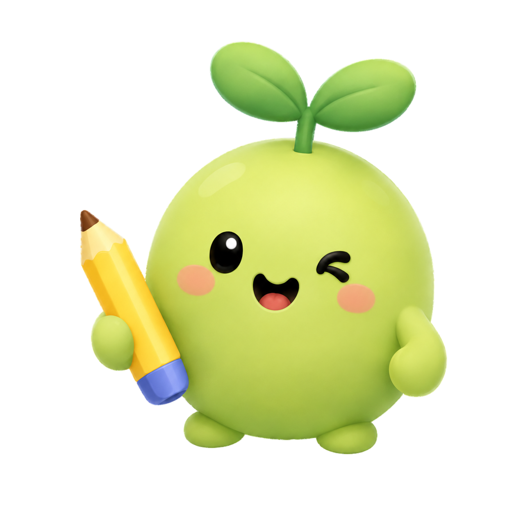

오늘의 수업
3학년 2반 국어
학생 24명 · 아직 시작 전이에요
내 학급
담당하고 있는 학급이에요
수업을 열고 학생들을 만나보세요!
진행 중인 수업
닫혀있는 수업
학급 선택
담당하고 있는 학급을 선택하여
수업을 시작해보세요!
담당 학급
메시지
학년별 수업
오늘의 활동
학급 탐색
다른 선생님이 열어둔 학급을 둘러보고 참여를 요청할 수 있어요.
학생 관리
과제 관리
과제를 만들고 학생들의 학습 결과를
확인해 보세요.

채팅 관리
학생이 보낸 메시지를 확인하고 답장할 수 있어요. 학생 간 채팅은 지원하지 않아요.
왼쪽에서 대화를 선택해 주세요
선생님 방송
수업 채팅
학생 선택
전체 공지
어느 모둠(학년) 수업을 진행할까요?
한 번에 하나의 모둠(학년)에 집중해서 수업을 진행해요.
수업 일정
다가오는 복식학급 수업 일정을 확인해요.
AI 말랑이
수업 준비나 학생 지도가 궁금할 때 말랑이에게 물어보세요.
AI 말랑이
선생님을 도와주는 AI 어시스턴트예요